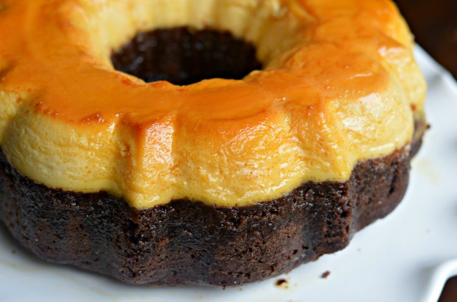

Chocolate flan cake

Description:
Mexican Chocoflan Impossible Cake is a dense, rich chocolate
cake stacked with creamy vanilla flan,
dripping with a delicate layer of cajeta caramel sauce!
Cake Ingredients:
- Crisco® Original No-Stick Cooking Spray
- ½ cup SMUCKER'S® Caramel Flavored Topping
- 1 (15.25 ounce) package devil's food cake mix
- 1 cup water
- 3 large eggs
- ½ cup Crisco® Pure Vegetable Oil
Flan Ingredients:
- 1 (14 ounce) can EAGLE BRAND® Sweetened Condensed Milk
- 1 (12 ounce) can PET® Evaporated Milk
- 4 large eggs, at room temperature
- 4 ounces cream cheese, softened
- 1 teaspoon vanilla extract
Steps:
- Preheat the oven to 350 degrees F (175 degrees C). Coat a 12-cup fluted tube
pan with nonstick spray. Place a piece of rolled-up foil into the tube part
of the pan to prevent cake from spilling over the top. Pour caramel topping
into the prepared pan.
- Beat cake mix, water, 3 eggs, and vegetable oil together in a large bowl until
well combined; pour evenly over caramel topping.
- Combine condensed milk, evaporated milk, 4 eggs, cream cheese, and vanilla in
a blender. Process until smooth; pour slowly over cake batter. While baking,
the cake will rise and the milk mixture will go to the bottom.
- Coat a piece of foil with nonstick spray. Cover the pan tightly with foil,
coated-side down. Place the pan in a large roasting pan. Pour hot water into
the roasting pan to a depth of 2 inches.
- Bake in the preheated oven until a toothpick inserted in the center comes out
with a few moist crumbs on it, about 2 hours.
- Place cake on a cooling rack; cool for 15 minutes. Remove foil and invert onto
a serving plate. Cool for 1 hour at room temperature. Chill for 4 hours or
overnight before serving.